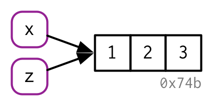
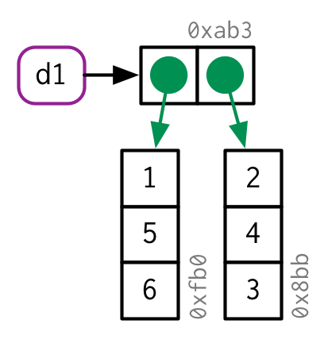

3 Names and values
3.1 Introduction
In R, it is important to understand the distinction between an object and its name. A correct mental model is important because it will help you:
- More accurately predict performance and memory usage of R code.
- Write faster code because accidental copies are a major cause of slow code.
- Better understand R’s functional programming tools.
The goal of this chapter is to help you understand the distinction between names and values, and when R will copy an object.
Quiz
Answer the following questions to see if you can safely skip this chapter. You can find the answers at the end of the chapter in Section 3.7.
Given the following data frame, how do I create a new column called “3” that contains the sum of
1and2? You may only use$, not[[. What makes1,2, and3challenging as variable names?In the following code, how much memory does
yoccupy?On which line does
aget copied in the following example?
Outline
Section 3.2 introduces you to the distinction between names and values, and discusses how
<-creates a binding, or reference, between a name and a value.Section 3.3 describes when R makes a copy; whenever you modify vector, you’re almost always actually create a new, modified vector. You’ll learn how to use
tracemem()to figure out when a copy actually occurs, and then explore the implications as they apply to function calls, lists, data frames, and character vectors.Section 3.4 explores the implications of the previous two sections on how much memory an object occupies. You’ll learn to use
lobstr::obj_size()as your intuition may be profoundly wrong, and the baseobject.size()is unfortunately inaccurate.Section 3.5 describes the two important exceptions to copy-on-modify: values with a single name, and environments. In these two special cases, objects are actually modified in place.
Section 3.6 closes out the chapter with a discussion of the garbage collector, which frees up memory used by objects that are no longer referenced by a name.
Prerequisites
We’ll use the development version of lobstr to dig into the internal representation of R objects.
Sources
The details of R’s memory management are not documented in a single place. Much of the information in this chapter was gleaned from a close reading of the documentation (particularly ?Memory and ?gc), the memory profiling section of “Writing R extensions” (R Core Team 2018b), and the SEXPs section of “R internals” (R Core Team 2018a). The rest I figured out by reading the C source code, performing small experiments, and asking questions on R-devel. Any mistakes are entirely mine.
3.2 Binding basics
Take this code:
It’s easy to read it as: “create an object named ‘x’, containing the values 1, 2, and 3”. Unfortunately, that’s a simplification that will lead to you make inaccurate predictions about what R is actually doing behind the scenes. It’s more accurate to think about this code as doing two things:
- Creating an object, a vector of values,
c(1, 2, 3). - Binding the object to a name,
x.
Note that the object, or value, doesn’t have a name; it’s the name that has a value. To make that distinction more clear, I’ll draw diagrams like this:
The name, x, is drawn with a rounded rectangle, and it has an arrow that points to, binds, or references, the value, the vector 1:3. Note that the arrow points in opposite direction to the assignment arrow: <- creates a binding from the name on the left-hand side to the object on the right-hand side.
You can think of a name as a reference to a value. For example, if you run this code, you don’t get another copy of the value 1:3, you get another binding to the existing object:
You might have noticed the value 1:3 has a label: 0x74b. While the vector doesn’t have a name, I’ll occasionally need to refer to objects independently of their bindings. To make that possible, I’ll label values with a unique identifier. These unique identifers have a special form that looks like the object’s memory “address”, i.e. the location in memory in which the object is stored. It doesn’t make sense to use the actual memory address because that changes every time the code is run.
You can access the address of an object with lobstr::obj_addr(). This allows us to see that x and y both point to the same location in memory:
These identifiers are long, and change every time you restart R.
It takes some time to get your head around the distinction between names and values, but it’s really helpful for functional programming when you start to work with functions that have different names in different contexts.
3.2.1 Non-syntactic names
R has strict rules about what constitutes a valid name. A syntactic name must consist of letters1, digits, . and _, and can’t begin with _ or a digit. Additionally, it can not be one of a list of reserved words like TRUE, NULL, if, and function (see the complete list in ?Reserved). Names that don’t follow these rules are called non-syntactic names, and if you try to use them, you’ll get an error:
It’s possible to override the usual rules and use a name with any sequence of characters by surrounding the name with backticks:
Typically, you won’t deliberately create such crazy names. Instead, you need to understand them because you’ll be subjected to the crazy names created by others. This happens most commonly when you load data that has been created outside of R.
3.2.2 Exercises
Explain the relationship between
a,b,canddin the following code:The following code accesses the mean function in multiple different ways. Do they all point to the same underlying function object? Verify with
lobstr::obj_addr().By default, base R data import functions, like
read.csv(), will automatically convert non-syntactic names to syntactic names. Why might this be problematic? What option allows you to suppress this behaviour?What rules does
make.names()use to convert non-syntactic names into syntactic names?I slightly simplified the rules that govern syntactic names. Why is
.123e1not a syntactic name? Read?make.namesfor the full details.
3.3 Copy-on-modify
Consider the following code, which binds x and y to the same underlying value, then modifies2 y.
Modifying y clearly doesn’t modify x, so what happened to the shared binding? While the value associated with y changes, the original object does not. Instead, R creates a new object, 0xcd2, a copy of 0x74b with one value changed, then rebinds y to that object.
This behaviour is called copy-on-modify, and understanding it makes your intuition for the performance of R code radically better. A related way to describe this phenomenon is to say that R objects are immutable, or unchangeable. However, I’ll generally avoid that term because there are a couple of important exceptions to copy-on-modify that you’ll learn about in Section 3.5.
3.3.1 tracemem()
You can see when an object gets copied with the help of base::tracemem(). You call it with an object and it returns the current address of the object:
Whenever that object is copied in the future, tracemem() will print out a message telling you which object was copied, what the new address is, and the sequence of calls that lead to the copy:
Note that if you modify y again, it doesn’t get copied. That’s because the new object now only has a single name binding to it, so R can apply a modify-in-place optimisation. We’ll come back to that shortly.
untracemem() is the opposite of tracemem(); it turns tracing off.
3.3.2 Function calls
The same rules for copying also apply to function calls. Take this code:
f <- function(a) {
a
}
x <- c(1, 2, 3)
cat(tracemem(x), "\n")
#> <0x7ff840b48578>
z <- f(x)
# there's no copy here!
untracemem(x)While f() is running, a inside the function will point to the same value as x does outside of it:
(You’ll learn more about the conventions used in this diagram in Execution environments.)
And once complete, x and z will point to the same object. 0x74b never gets copied because it never gets modified. If f() did modify x, R would create a new copy, and then z would bind that object.

3.3.3 Lists
It’s not just names (i.e. variables) that point to values; the elements of lists do too. Take this list, which superficially is very similar to the vector above:
The internal representation of the list is actually quite different to that of a vector. A list is really a vector of references:
This is particularly important when we modify a list:
Like vectors, lists are copied-on-modify; the original list is left unchanged, and R creates a modified copy. This is a shallow copy: the list object and its bindings are copied, but the values pointed to by the bindings are not. The oppposite of a shallow copy is a deep copy, where the contents of every reference are also copied. Prior to R 3.1.0, copies were always deep copies, .
You can use lobstr::ref() to see values that are shared across lists. ref() prints the memory address of each object, along with a local id so that you can easily cross-reference shared components.
3.3.4 Data frames
Data frames are lists of vectors, so copy-on-modify has important consequences when you modify a data frame. Take this data frame as an example:

If you modify a column, only that column needs to be modified; the others can continue to point to the same place:
However, if you modify a row, there is no way to share data with the previous version of the data frame, and every column must be copied-and-modified.
3.3.5 Character vectors
The final place that R uses references is in character vectors. I usually draw character vectors like this:
But this is a polite fiction, because R has a global string pool. Each element of a character vector is actually a pointer to a unique string in that pool:
You can request that ref() show these references:
ref(x, character = TRUE)
#> █ [1:0x7ff840b3e898] <chr>
#> ├─[2:0x7ff8411f7b98] <string: "a">
#> ├─[2:0x7ff8411f7b98]
#> ├─[3:0x7ff84157edc0] <string: "abc">
#> └─[4:0x7ff840874200] <string: "d">This has a profound impact on the amount of memory a character vector takes but, but is otherwise not generally important, so elsewhere in the book I’ll draw character vectors as if the strings live inside the vector.
3.3.6 Exercises
Why is
tracemem(1:10)not useful?Explain why
tracemem()shows two copies when you run this code. Hint: carefully look at the difference between this code and the code shown earlier in the section.Sketch out the relationship between the following objects:
What happens when you run this code?
Draw a picture.
3.4 Object size
You can find out how much space an object occupies in memory with lobstr::obj_size()3:
Since the elements of lists are references to values, the size of a list might be much smaller than you expect:
y is only 72 bytes4 bigger than x. That’s the size of an empty list with three elements:
Similarly, the global string pool means that character vectors take up less memory than you might expect: repeating a string 1000 times does not make it take up 1000 times as much memory.
References also make it challenging to think about the size of individual objects. obj_size(x) + obj_size(y) will only equal obj_size(x, y) if there are no shared values. Here, the combined size of x and y is the same as the size of y:
3.4.1 Exercises
In the following example, why are
object.size(y)andobj_size(y)so radically different? Consult the documentation ofobject.size().Take the following list. Why is its size somewhat misleading?
Predict the output of the following code:
3.5 Modify-in-place
As we’ve seen above, modifying an R object will usually create a copy. There are two exceptions that we’ll explore below:
Objects with a single binding get a special performance optimisation.
Environments are a special type of object that is always modified in place.
3.5.1 Objects with a single binding
If an object only has a single name that binds it, R will modify it in place:
(Carefully note the object ids here: v continues to bind to the same object, 0x207.)
It’s challenging to predict exactly when R applies this optimisation because of two complications:
When it comes to bindings, R can currently5 only count 0, 1, and many. That means if an object has two bindings, and one goes away, the reference count does not go back to 1 (because one less than many is still many).
Whenever you call any regular function, it will make a reference to the object. The only exception are specially written C functions. These occur mostly in the base package.
Together, this makes it hard to predict whether or not a copy will occur. Instead, it’s better to determine it empirically with tracemem(). Let’s explore the subtleties with a case study using for loops. For loops have a reputation for being slow in R, but often that slowness is because every iteration of the loop is creating a copy.
Consider the following code. It subtracts the median from each column of a large data frame:
x <- data.frame(matrix(runif(5 * 1e4), ncol = 5))
medians <- vapply(x, median, numeric(1))
for (i in seq_along(medians)) {
x[[i]] <- x[[i]] - medians[[i]]
}This loop is surprisingly slow because every iteration of the loop copies the data frame, as revealed by using tracemem():
cat(tracemem(x), "\n")
#> <0x7f80c429e020>
for (i in 1:5) {
x[[i]] <- x[[i]] - medians[[i]]
}
#> tracemem[0x7f80c429e020 -> 0x7f80c0c144d8]:
#> tracemem[0x7f80c0c144d8 -> 0x7f80c0c14540]: [[<-.data.frame [[<-
#> tracemem[0x7f80c0c14540 -> 0x7f80c0c145a8]: [[<-.data.frame [[<-
#> tracemem[0x7f80c0c145a8 -> 0x7f80c0c14610]:
#> tracemem[0x7f80c0c14610 -> 0x7f80c0c14678]: [[<-.data.frame [[<-
#> tracemem[0x7f80c0c14678 -> 0x7f80c0c146e0]: [[<-.data.frame [[<-
#> tracemem[0x7f80c0c146e0 -> 0x7f80c0c14748]:
#> tracemem[0x7f80c0c14748 -> 0x7f80c0c147b0]: [[<-.data.frame [[<-
#> tracemem[0x7f80c0c147b0 -> 0x7f80c0c14818]: [[<-.data.frame [[<-
#> tracemem[0x7f80c0c14818 -> 0x7f80c0c14880]:
#> tracemem[0x7f80c0c14880 -> 0x7f80c0c148e8]: [[<-.data.frame [[<-
#> tracemem[0x7f80c0c148e8 -> 0x7f80c0c14950]: [[<-.data.frame [[<-
#> tracemem[0x7f80c0c14950 -> 0x7f80c0c149b8]:
#> tracemem[0x7f80c0c149b8 -> 0x7f80c0c14a20]: [[<-.data.frame [[<-
#> tracemem[0x7f80c0c14a20 -> 0x7f80c0c14a88]: [[<-.data.frame [[<-
untracemem(x)In fact, each iteration copies the data frame not once, not twice, but three times! Two copies are made by [[.data.frame, and a further copy6 it made because [[.data.frame is a regular function and hence increments the reference count of x.
We can reduce the number of copies by using a list instead of a data frame. Modifying a list uses internal C code, so the refs are not incremented and only a single copy is made:
y <- as.list(x)
cat(tracemem(y), "\n")
#> <0x7f80c5c3de20>
for (i in 1:5) {
y[[i]] <- y[[i]] - medians[[i]]
}
#> tracemem[0x7f80c5c3de20 -> 0x7f80c48de210]: While it’s not hard to determine when copies are made, it is hard to prevent them. If you find yourself resorting to exotic tricks to avoid copies, it may be time to rewrite your function in C++, as described in Chapter 25.
3.5.2 Environments
You’ll learn more about environments in Chapter 7, but it’s important to mention them here because they behave differently to other objects: environments are always modified in place. This property is sometimes described as reference semantics because when you modify an environment all existing bindings to the environment continue to have the same reference.
Take this environment, which we bind to e1 and e2:
If we change a binding, the environment is modified in place:
This basic idea can be used to create functions that “remember” their previous state. See Section 11.2.3 for more details.
One consequence of this is that environments can contain themselves:
This is a unique property of environments!
3.5.3 Exercises
Wrap the two methods for subtracting medians into two functions, then use the bench (Hester 2018) package to carefully compare their speeds. How does performance change as the number of columns increase?
What happens if you attempt to use
tracemem()on an environment?
3.6 Unbinding and the garbage collector
Consider this code:


We create two objects, but by the end of code neither object is bound to a name. How do these objects get deleted? That’s the job of the garbage collector, or GC, for short. The GC creates more memory by deleting R objects that are no longer used, and if needed, requesting more memory from the operating system.
R uses a tracing GC. That means it traces every object reachable from the global7 environment, and all the objects reachable from those objects (i.e. the references in lists and environments are searched recursively). The garbage collector does not use the reference count used for the modify-in-place optimisation described above. The two ideas are closely related but the internal data structures have been optimised for different use cases.
The garbage collector (GC) is run automatically whenever R needs more memory to create a new object. From the outside, it’s basically impossible to predict when the GC will run, and indeed, you shouldn’t try. Instead, if you want to find out when the GC runs, call gcinfo(TRUE): the the GC will print a message to the console every time it runs.
You can force the garbage collector to run by calling gc(). Despite what you might have read elsewhere, there’s never any need to call gc() yourself. You may want to call gc() to ask R to return memory to your operating system, or for its side-effect of telling you how much memory is currently being used:
gc()
#> used (Mb) gc trigger (Mb) limit (Mb) max used (Mb)
#> Ncells 676622 36.2 1242004 66.4 NA 1242004 66.4
#> Vcells 3681258 28.1 17080385 130.4 16384 17076540 130.3lobstr::mem_used() is a wrapper around gc() that just prints the total number of bytes used:
This number won’t agree with the amount of memory reported by your operating system for three reasons:
It only includes objects created by R, not the R interpreter itself.
Both R and the operating system are lazy: they won’t reclaim memory until it’s actually needed. R might be holding on to memory because the OS hasn’t yet asked for it back.
R counts the memory occupied by objects but there may be gaps due to deleted objects. This problem is known as memory fragmentation.
3.7 Answers
You must surround non-syntactic names in
`. The variables1,2, and3have non-syntactic names, so must always be quoted with backticks.It occupies about 4 MB.
ais copied whenbis modified,b[[1]] <- 10.
References
R Core Team. 2018b. “Writing R Extensions.” R Foundation for Statistical Computing. https://cran.r-project.org/doc/manuals/r-devel/R-ints.html.
R Core Team. 2018a. “R Internals.” R Foundation for Statistical Computing. https://cran.r-project.org/doc/manuals/r-devel/R-exts.html.
Hester, Jim. 2018. Bench: High Precision Timing of R Expressions. http://bench.r-lib.org/.
Surprisingly, what constitutes a letter is determined by your current locale. That means that the syntax of R code actually differs from computer to computer, and it’s possible for a file that works on one computer to not even parse on another!↩
You may be surprised to see
[[used with a numeric vector. We’ll come back to this in Section 5.3, but in brief, I think you should use[[whenever you are getting or setting a single element.↩Beware of the base
utils::object.size()function. It does not correctly account for shared references and will return sizes that are too large.↩If you’re running 32-bit R you’ll see slightly different sizes.↩
By the time you read this, that may have changed, as plans are afoot to improve reference counting: https://developer.r-project.org/Refcnt.html↩
Note that these copies are shallow, and only copy the reference to each individual column, not the contents. This means the performance isn’t terrible, but it’s obviously not as good as it could be.↩
And every environment on the current call stack.↩